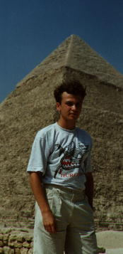

|
. | |||
|
Путешествие в Египет.
Дорога:
Старый залатанный ТУ-154 донес нас из Шереметьево-2 до Хургады за 2 часа с минутами, по дороге нас почему-то мелко трясло, когда приземлились все аплодировали. От сердца отлегло, но неприятно беспокоила мысль, что нам еще, на подобном самолете возвращаться обратно. Мы вышли из самолета и почему-то пешком направились к зданию аэропорта, дул обжигающе горячий ветер с песком, заканчивался июль начинался август – самый жаркий месяц в Египте.
Место:
Хургада – курортный город, по совместительству столица “Красноморской” провинции Египта, протянулась на много-много миль вдоль побережья Красного моря, в основном состоит из отелей расположенных вдоль одной улицы-дороги. Кроме Красного моря и каменистой серой пустыни вокруг, достопримечательности в Хургаде отсутствуют.
Отель:
После прохождения легкой процедуры таможенного и пограничного контроля (въезд в Египет - безвизовый), нас встретил гид с табличкой “Москва-тур” и проводил в автобус, которым нас и довезли до отеля “Хилтон” расположенного на северной окраине Хургады. Хотя мы с моей сестрой заказывали просто две раздельные комнаты, нам досталось половина двухэтажной виллы, которая состояла из двух холлов, кухни, четырех комнат (мы заняли естественно только две) и нескольких санузлов, приправлено все это хозяйство несметным числом кондиционеров и несколькими телефонами и телевизорами разбросанными по всему дому. (Кстати телевизоры в числе прочей сотни каналов показывали и центральные российские). Итак, поселились мы, что называется – шикарно, например кровать, на которой я спал один, была про крайней мере трех спальная.
(Сразу замечу для тех читателей которые сейчас подумали, типа: “ну понесло хвастать и выпендриваться” в лучшем отеле я не жил нигде и никогда больше, точнее ничто даже не приближалось… )
За дверями виллы был горячий ветер, и сад с цветами и пальмами, попутно замечу, что за пределами территории, огороженной каменным забором, никакого сада не было, впрочем, там даже травинки не росло – только жесткая каменистая пустыня.
Заканчиваю с отелем – затянул, еще в отеле три ресторана завтракай и ужинай в любом, кормят просто на убой, своя дискотека, величиной с ночной клуб, бассейны, бильярд и прочая развлекаловка, дейвинг-станция, и самое главное свой внутренний закрытый пляж на Красном море с бесплатными шезлонгами, зонтами, полотенцами и матрасами, которые официанты приносят по первому требованию.
Язык:
Египетский диалект арабского, второй – английский, на котором говорят почти все, но с жутким акцентом.
Народ:
Тупой.
Валюта:
Египетский паунд (фунт), но уважают и любую другую (кроме рубля, конечно, который берут только на сувениры), принимают тревел-чеки, и пластиковые карты.
1 US$ ~= 3.5 фунтов египетских.
Температура:
+35..+37 градусов в тени.
На солнце лучше не появляться без шляпы или с открытыми частями тела, можно получить солнечный удар (я получил) или сильные ожоги (видел лысого немца, которому словно раскаленный утюг к голове приложили, а с меня сошла вся кожа со спины). Загорать стоит, сильно намазавшись защитным кремом, и только под зонтиком.
Сувениры:
Собственно страна нищая, и покупать особенно нечего. Чтобы добраться до центра города, где и идет торговля, лучше всего воспользоваться микро-автобусами типа Рафика или Газели, что стоит около фунта в один конец на одного человека, такси лучше не пользоваться они дороги и ничем не лучше. Торговая часть города в Хургаде называется “Даун-танун”, и продают там, в основном золото, серебро, кожу, сувениры. Как и во всех арабских странах, когда хотите, что-то купить всегда необходимо торговаться, как бы это не было тяжело, там так принято, если вы не станете торговаться и купите, что-то не торгуясь, вы не осчастливите продавца, вас просто не будут уважать. Второе никогда не покупайте что-нибудь из вежливости, как бы вас не хватали за руки. Вы можете при спокойно торговаться полчаса, а потом, сторговавшись развернуться и уйти, и уже зная ориентировочную цену начать торговаться опять завтра или в соседней лавке. Это нормально. И именно так нужно делать. Типичный пример: моей сестре понравился браслет из амбры (что это такое не знаю), продавец сказал 100 я сказал 10, он страшно скривил рожу но начал торговаться он 70, я 11……….. в общем сторговались на 20.
Я развернулся и несмотря на протесты сестры и продавца ушел ничего не купив, в лавке неподалеку уже зная примерную цену и торгуясь поэтому более грамотно я купил точно такой же браслет за 5 фунтов. Возможно, конечно я переплатил, но думаю не более пары фунтов. В общем торговаться – это удовольствие.
Мне же в Египте понравились только фигурки богов высеченные из камня – гранита и базальта, их то я и привез, для примера скажу, что голову кошки из гранита, очень приятную и отполированную, я купил за пять фунтов, базальтовые же стоят еще дешевле поскольку на самом деле они не ручная работа как утверждается, а каменное литье.
Достопримечательности:
В Хургаде как я уже заметил достопримечательность только одна: Красное море, в которое обязательно необходимо съездить на морскую прогулку, на коралловые острова, с маской и трубкой это действительно уникальное зрелище, и если есть возможность, то это великолепие нужно запечатлеть на подводный фотоаппарат. По разноцветию и великолепию тамошний подводный мир можно сравнить только лишь с фильмами Жака Иф Кусто, кораллы всех цветов радуги и всех форм, кстати, некоторые жгутся как крапива, морские ежи, рыбы невероятной пестроты, форм, и размеров, и кстати почти ручные, а если взять с собой что-нибудь типа булочки, то их слетится огромное количество, и будут вырывать ее из рук. Видел также небольшого, но угрюмого ската.

Пирамиды. Как же побывать в Египте и не посетить пирамиды? Но, к сожалению, от Хургады до Каира, где и расположились пирамиды (хотя наоборот это Каир построили по соседству с пирамидами), 6 часов езды на автобусе туда, и столько же обратно. Каир великолепен, проживает в нем около 15 млн. человек, это крупнейший город Африки, кроме пирамид мне очень понравилась мечеть Мухамеда Али, построенная в честь основателя Каира. В пирамидах же нет ничего особенного, все уже давно видел по телевизору, тут только стоит отметится. Единственное, что поражает это размер, они действительно “офигенно огромны” это никаким телеком, и никакими фото не передать - это нужно видеть.
Луксор, или старое название “Фивы”, Карнакский Храм, город мертвых, переправа через Нил. Вот здесь действительно стоит побывать, здесь действительно многое сохранилось и очень интересно. Когда показывают фильмы про древнюю культуру Египта, я все узнаю, я все видел в Луксоре. Добираться до Луксора из Хургады на автобусе 4 часа. В городе мертвых неподалеку от Луксора в пустыне, мне сделалось дурно, я был без шапки, в полдень, в августе под открытым солнцем пару часов, как потом выяснилось температура, в тот день, там была более 70 градусов по целсию. Это как сауна… только выйти некуда.
Вывод:
Сегодня когда я пишу эти строки, я побывал уже в десяти странах, но самые лучшие и яркие воспоминания у меня остались от страны Египет.
И.В.Осипов

Created 14'10.98